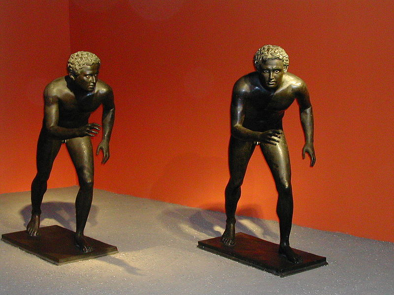
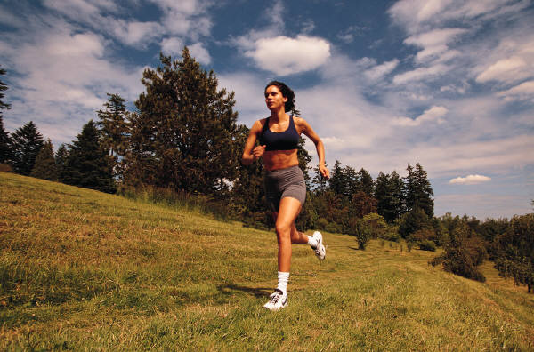

Run
Run - one way to get around (locomotion) of humans and animals; characterized by the presence of the so-called "flight phase" and it is carried out as a result of complex coordinated activity of skeletal muscles and limbs'. For running is characterized, in General, the same cycle of movements as when walking, the same acting forces and functional muscle groups. The difference between running and walking is the lack of the running phase of double support.

Running provides a good environment as aerobic exercise, which increases the threshold of endurance, has a positive effect on the cardiovascular system, increases metabolism in the body and thus, helps to exercise control over body weight. Running has a positive effect on the immune system system and improves skin tone.
Running allows you to adjust the rhythmic work endocrine and nervous systems. During the run, when a person is constantly overcome the earth's gravity, jumping and falling in an upright position, the blood flow in the vessel is in resonance with running, while aktiviziruyutsya previously untapped capillaries. Microcirculation of blood activates the activity of the organs of internal secretion. The flow of hormones increases and contributes to the coordination of the activities of other organs and body system.
Mostly running. the muscles of the heart, thigh and Shin are involved, and the legs are not the same nodes of the same muscles that many athletes try to load in the gym, replacing run. In the Shin when running, not only the calf muscle is involved, which can develop when walking on heels. Foot pushes also flexor and extensor of the thumb and middle finger, develops flounder and the anterior tibial muscle. From that, the Shin becomes more smooth or full, harmoniously developed.

Secondary development of muscles receives the rectus abdominis. But the development of breath develops and costal sites in this muscle.
Breathing when running is based on the need the body of oxygen. Oxygen starvation causes increased heart rate, that affects the shortness of breath. Breathing, in which the runner is easy to talk, aerobic is called, is considered the heartbeat of less than 60% relative to the maximum possible. Breathing in which hard to speak, called respiration with oxygen hunger. Artificially created oxygen starvation causes the muscles to work harder, to increase the number of microcapillaries, develops in the lungs an increased number of blood vessels that from less air allows oxygen to be taken away quality.
Engaged in running on an empty stomach, planning nutrition in such a way that by the beginning of training the stomach was empty. A full stomach strains the pancreas, can contribute to the appearance of pain in his side.
Running and running competitions are known in history of man "reasonable" at all times, on all continents, of all the Nations, beginning from a person "skillful". It's those physical exercises. which were necessary for the girls of ancient Greece, for the birth of healthy children's. (Aristotle wrote about this, criticizing the legislation that does not oblige parents play sports with girls)

Morozov I.S. EVT-16bzu